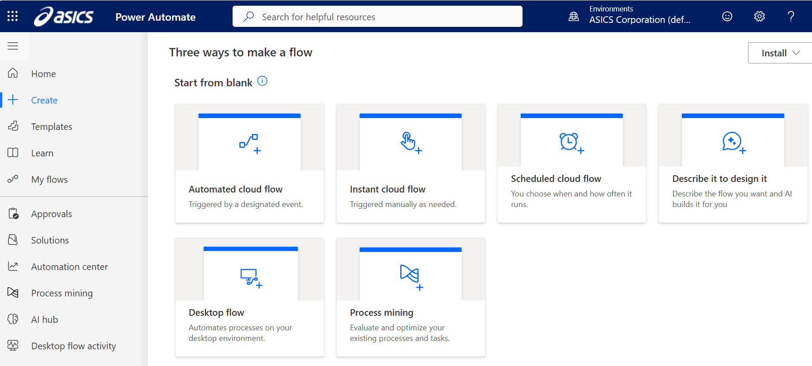
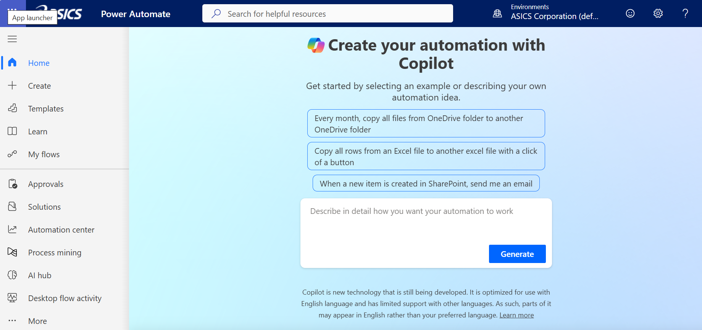
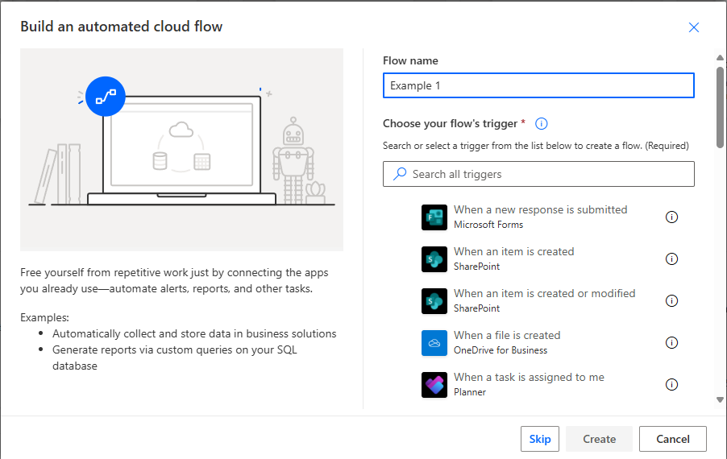
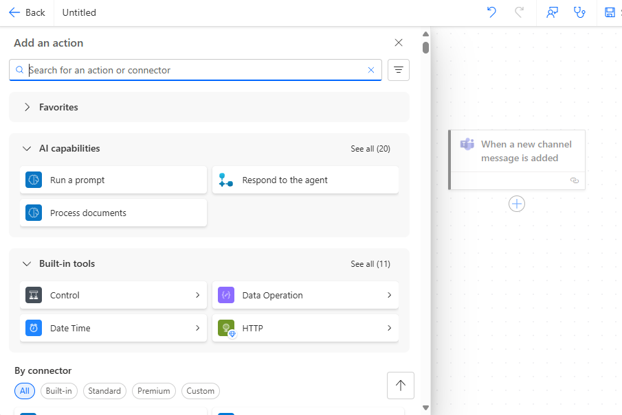
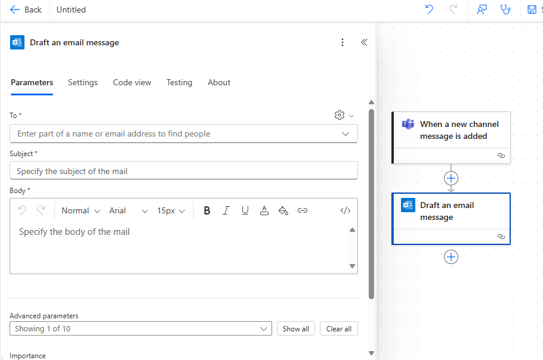

How to Build Your Own PowerAutomate Script
Step-by-step guide for creating custom automations. Start with a template or follow the instructions below.
Step 1a: Access PowerAutomate
Begin by accessing the PowerAutomate platform through your Microsoft 365 account.
- Go to flow.microsoft.com
- Sign in with your ASICS Microsoft 365 credentials
- Click "Create" in the left sidebar OR move to step 1b to create with Copilot
- Choose "Automated cloud flow" for most scenarios
Step 1b: Create with Copilot
Alternatively, create a flow with Microsoft's Copilot.
- Stay on the "Home" tab of Power Automate
- Use Microsoft's Copilot to create a flow just by describing what you want to do
Step 2: Choose Your Trigger
Select the event that will start your automation. This is the foundation of your flow.
- Manual triggers: "Manually trigger a flow" - starts when you click a button
- File triggers: "When a file is created or modified" - responds to file changes
- Email triggers: "When a new email arrives" - processes incoming emails
- Scheduled triggers: "Recurrence" - runs at set intervals
- Form triggers: "When a new response is submitted" - processes form submissions
Step 3: Add Actions
Build your automation by adding actions that perform specific tasks after the trigger occurs.
- Click the "+" button after your trigger
- Search for the action you need (e.g., "Send an email")
- Configure the action parameters
- Add more actions as needed
- Use "Apply to each" for processing multiple items
Step 4: Add Conditions and Logic
Make your flow intelligent by adding conditional logic and decision points.
- Conditions: Add "Condition" action to create if/then logic
- Switch statements: Use "Switch" for multiple possible outcomes
- Variables: Store and manipulate data with "Initialize variable"
- Expressions: Use formulas to calculate values or format text
Step 5: Test, Deploy and Monitor
Thoroughly test your automation, deploy it, and set up monitoring to track its performance and catch issues.
- Test your flow:
- Click "Test" in the top right corner
- Choose "Manually" to test immediately
- Provide test data if prompted
- Review the execution results
- Check each step for errors or unexpected behavior
- Fix any issues and retest
- Deploy your flow:
- Click "Save" then "Turn on" to deploy
- Set up notifications for error alerts on failed runs
- Document your flow with descriptions and comments for future reference
- Monitor performance:
- Check the "Analytics" tab regularly
- Monitor run statistics and success rates
- Set up alerts for any failures or issues
For some helpful pre-built flows, check out My Flow Library or go to Microsoft Public Templates.
🤖 Microsoft Copilot for PowerAutomate
Microsoft Copilot can help you create PowerAutomate flows using natural language. Simply describe what you want to automate, and Copilot will generate the flow for you.
- Natural Language: Describe your automation in plain English
- Smart Suggestions: Get intelligent recommendations for actions and triggers
- Error Prevention: Copilot helps avoid common mistakes
- Learning Tool: Great for beginners to understand flow structure